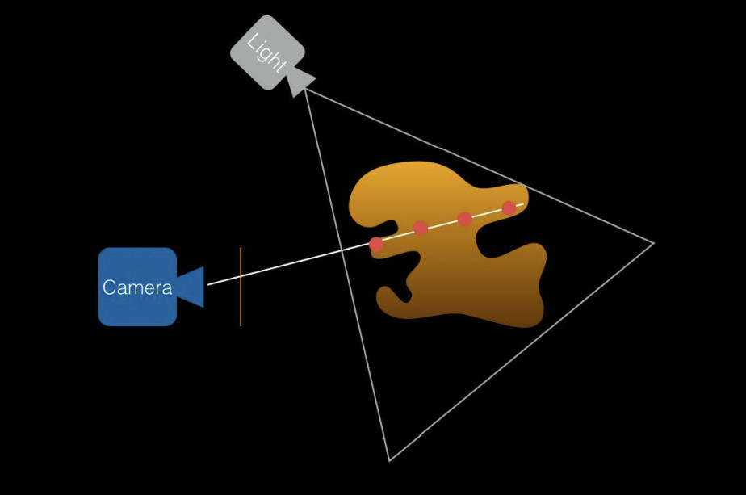
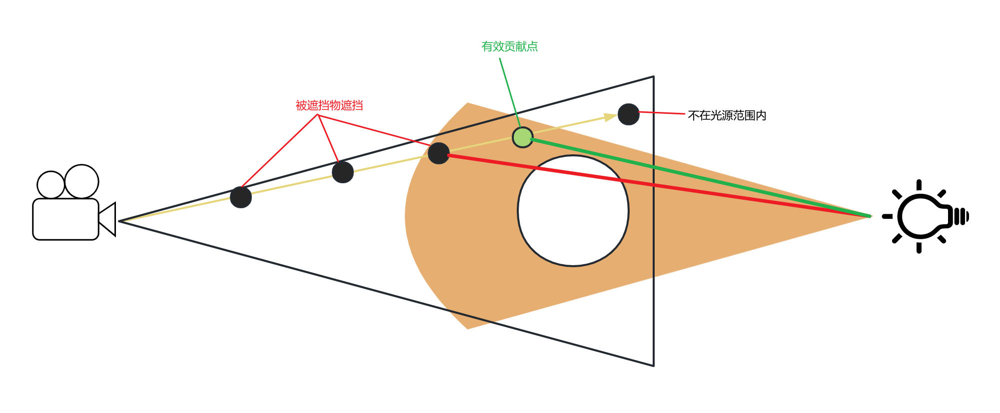
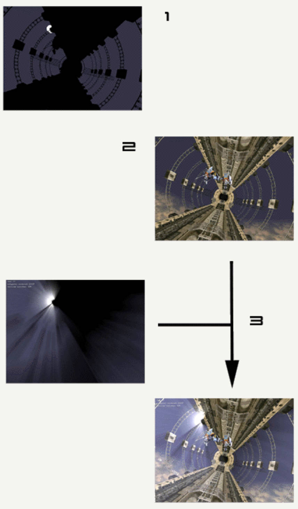
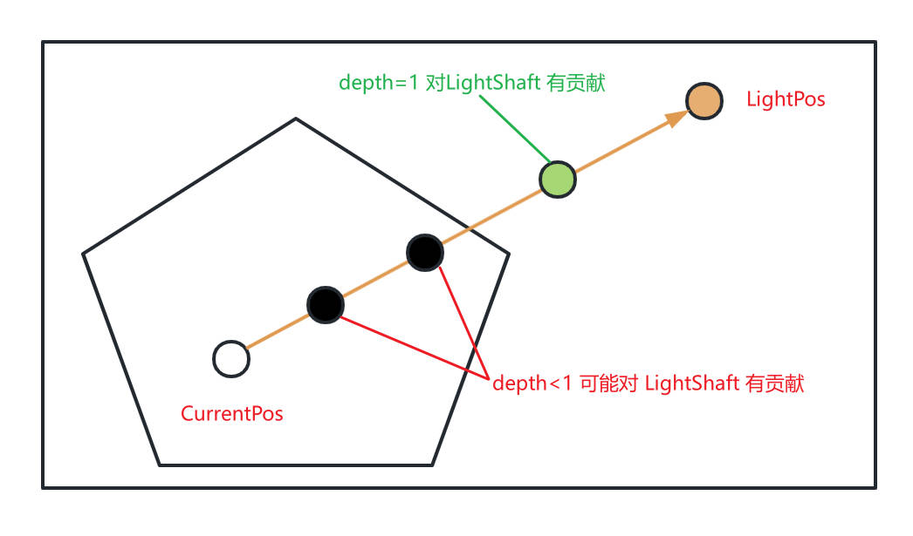

VolumetricLightScattering
Table of Contents
VolumetricLightScattering note.
<!– more –>
VolumetricLightScattering
Basic Knowledge
体渲染相关概念
吸收（absorption）：光能转化为介质内其它形式的能（如热能）。
外散射（out-scattering）：光打在介质粒子上散射到其它方向去了。
自发光（emission）：介质内其它形式的能（如热能）转化成光能。
内散射（in-scattering）：其它方向来的光打在介质粒子上恰好散射到本方向上。
丁达尔效应
可见光的波长约在 400～700 nm 之间，当光线射入分散体系时，一部分自由地通过，一部分被吸收、反射或散射，可能发生以下三种情况：
（1）当光束通过粗分散体系，由于分散质的粒子大于入射光的波长，主要发生反射或折射现象，使体系呈现混浊。
（2）当光线通过胶体溶液，由于分散质粒子的直径一般在 1～100 nm 之间，小于入射光的波长，主要发生散射，可以看见乳白色的光柱，出现丁达尔现象。
（3）当光束通过分子溶液，由于溶液十分均匀，散射光因相互干涉而完全抵消，看不见散射光。
瑞利散射
瑞利散射是由远小于辐射波长的粒子对光或其他电磁辐射的散射。散射量与光的波长的四次方成反比(波长越短 Rayleigh 散射越强)。
空气分子对光的散射就属于 Rayleigh Scattering，瑞利散射是各向同性的，吸收可以忽略。
太阳光谱中波长较短的蓝紫光比波长较长的红光散射更明显，而短波中又以蓝光能量最大，所以在雨过天晴或秋高气爽时（空中较粗微粒比较少，以分子散射为主），在大气分子的强烈散射作用下，蓝色光被散射至弥漫天空，天空即呈现蔚蓝色。
米氏散射
当大气中粒子的直径与辐射的波长相当时发生的散射。这种散射主要由大气中的微粒，如烟、尘埃、小水滴及气溶胶等引起。米氏散射的散射强度与频率的二次方成正比，并且散射在光线向前方向比向后方向更强,方向性比较明显。
米氏散射是各向异性的，具有很强的 forward lobe 和更高的吸收比例。
LightShaft
RayMarching LightShaft 0
- 渲染光源方向的深度图
- 渲染摄像机方向的深度图
- 以摄像机原点为射线原点，以摄像机到当前着色点方向为射线方向，以摄像机深度为射线最远距离。
- 若当前 RayMarching 点不在阴影中，则表示该点对 LightShaft 效果有贡献，否则无贡献。
- 将当前 RayMarching 点转化到光源空间内，若 RayMarching 点的深度 <= 光源空间 DepthRT 深度，则表示其不在阴影中。
- 将当前 RayMarching 点转化到光源空间内，若 RayMarching 点的深度 <= 光源空间 DepthRT 深度，则表示其不在阴影中。


RayMarching LightShaft 1
- 渲染光源以及遮挡物到 OcclusionRT
- 正常渲染场景到 framebuffer
- 以远离光源的方向进行 RayMarching。Occlusion 按照远离距离衰减，将 Occlusion 和 FrameBuffer 进行混合。
- 混合函数为 glBlendFunc(GL_SRC_ALPHA, GL_ONE);
- 混合函数为 glBlendFunc(GL_SRC_ALPHA, GL_ONE);

uniform float exposure; uniform float decay; uniform float density; uniform float weight; uniform vec2 lightPositionOnScreen; uniform sampler2D firstPass; // occlusion rt const int NUM_SAMPLES = 100 ; void main() { vec2 deltaTextCoord = vec2( gl_TexCoord[0].st - lightPositionOnScreen.xy ); vec2 textCoo = gl_TexCoord[0].st; deltaTextCoord *= 1.0 / float(NUM_SAMPLES) * density; float illuminationDecay = 1.0; for(int i=0; i < NUM_SAMPLES ; i++) { textCoo -= deltaTextCoord; vec4 sample = texture2D(firstPass, textCoo ); sample *= illuminationDecay * weight; gl_FragColor += sample; illuminationDecay *= decay; } gl_FragColor *= exposure; }
light scattering with opengl https://fabiensanglard.net/lightScattering/ 有道云备份
RayMarching LightShaft 2
- 屏幕空间内，以当前着色点 pScreenUV 为原点，以光源着色点 lightScreenUV 为目标点。在这两个点之间进行 RayMarching。
- 若当前 RayMarching 点对应的深度为 1，则表示该点必定不在阴影中，其对 LightShaft 效果有贡献，否则无贡献。
- 近似计算 RayMarching 点对 LightShaft 的贡献
- 近似计算 RayMarching 点对 LightShaft 的贡献

Unity GodRay https://zhuanlan.zhihu.com/p/144037609
UE4 LightShafts
Occlusion 方法
利用场景深度 RT 创建一个 Mask，以远离 light 的方向对该 Mask 进行多次 Blur 操作，将结果作为 fog 和大气的 mask。该方法和现实生活中的光束产生的原理类似 - 光束由雾气的阴影所生成。注意：这也意味着光束的强弱度只能和雾气和大气相同。原理同上面 RayMarching LightShaft 1
Bloom 方法
该方法在世界空间中的光源周围捕捉场景颜色（包括半透明度和雾气散射），并从光源进行径向模糊。此法并非对真实世界中发生的一切进行模拟，但可控性较高（不受雾气密度限制），视觉效果震撼。太阳周围存在突出的明亮区域（如明亮的云朵）时光晕法的使用效果最佳。明亮的太阳过小，会形成一定程度的锯齿，而且 Blur 操作是图像空间操作，消耗比较高。